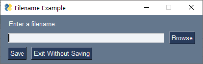

User Settings API
In release 4.30.0 there is a new set of API calls available to help with "user settings". Think of user settings as a dictionary that is automatically written to your hard drive. That's basically what it is.
In release 4.50.0 support for INI files was added in addition to the existing JSON file format.
While using JSON or config files to save and load a settings dictionary isn't very difficult, it is still code you'll need to write if you want to save settings as part of your GUI. Since having "settings" for a GUI based program isn't uncommon, it made sense to build this capability into PySimpleGUI. Clearly you can still use your own method for saving settings, but if you're looking for a simple and easy way to do it, these calls are likely about as easy as it gets.
There have already been some demo programs written that use JSON files to store settings. You can expect that this capability will begin to show up in more demos in the future since it's now part of PySimpleGUI.
User settings are stored in a Python dictionary which is saved to / loaded from disk. Individual settings are thus keys into a dictionary. You do not need to explicitly read nor write the file. Changing any entry will cause the file to be saved. Reading any entry will cause the file to be read if it hasn't already been read.
Two Interfaces
There are 2 ways to access User Settings
- User Settings function calls
- The
UserSettingsclass
They both offer the same basic operations. The class interface has an added benefit of being able to access the individual settings using the same syntax as Python dictionary.
If you want to use INI files, then you'll need to use the object interface.
List of Calls for Function Interface
| Function | Description |
|---|---|
| user_settings | Returns settings as a dictionary |
| user_settings_delete_entry | Deletes a setting |
| user_settings_delete_filename | Deletes the settings file |
| user_settings_file_exists | Returns True if settings file specified exists |
| user_settings_filename | Returns full path and filename of current settings file |
| user_settings_get_entry | Returns value for a setting. If no setting found, then specified default value is returned |
| user_settings_load | Loads dictionary from the settings file. This is not normally needed |
| user_settings_save | Saves settings to current or newly specified file. Not normally needed |
| user_settings_set_entry | Sets an entry to a particular value |
| user_settings_write_new_dictionary | Writes a specified dictionary to settings file |
Operations
There are 2 categories that the calls can be divided into.
- File operations
- Settings operations
File operations involve working with the JSON file itself. They include: * Setting the path and/or filename * Load/save the file (these are somewhat optional as the saving loading/saving is done automatically) * Deleting the settings file * Checking if settings file exists
Generally speaking, a setting is specified with a key which is generally a string. Settings operations are for working with the individual settings and include: * Get the value of a setting (returns a default value if not found) * Set the value of a setting (also saves the settings to disk)
Any setting operation may cause the file to be written. This is because a "get" operation can include returning a default value if the setting isn't found. This means a new entry is made in your settings dictionary is one didn't exist before. Since a new entry is made, that means it needs to be also be written to disk.
Filenames
The settings filename defaults the filename of your Python file making the call with the extension ".json" added. If your Python program is called test.py then your default settings filename will be test.json.
In addition to the filename having a default value, the path to the file also has a default value. The default depends on your operating system.
| Operating System | Default Path |
|---|---|
| Windows | \user\user_name\AppData\Local\PySimpleGUI\settings |
| Linux | ~/.config/PySimpleGUI/settings |
| Mac | ~/Library/Application Support/PySimpleGUI/settings |
When calling the User Settings APIs, if a parameter is named filename, you can specify a full path or just the filename. This will save you the trouble of having to split up your path and filename in your code. If you specify only the path, the the filename will be added to that path and named as defined earlier.
Like the rest of PySimpleGUI, the idea is for you to write as little code as possible. The default values for the filename and path should be fine for you to use. They will be stored in a location on your system that is meant to store user settings.
Setting Filename
If you want to see what the current filename is for your settings, then you can call user_settings_filename() with no parameters and you'll get back an absolute path and filename.
To make the code for specifying the folder and filename as simple as possible, the 2 parts are separated in the call specifying the name of the settings file. However, it is possible to supply a full and complete folder + filename as well.
The default filename for your settings file is the name of the file that makes the call to the User Settings API's with the .py extension changed to a .json extension. If your source file is called demo.py, then your settings filename will be demo.json.
Setting only the filename
If you want to control the name of the file and/or the path to the settings file, then you will use the user_settings_filename call. This function takes 2 parameters.
If you set only the path, then the filename will default to the value already described. If you set only the filename, then the path will be the default path is dependent on your operating system. See the table above for the locations for each OS.
import PySimpleGUI as sg
sg.user_settings_filename(filename='my_settings.json')
print(sg.user_settings_filename())
If you are running on Windows, then the result of running this code will be this printed on the console:
You are not restricted to naming your settings file to an extension of .json. That is simply the default extension that's used by PySimpleGUI. You can use any extension you would like, including no extension.
Setting only the path
Maybe you don't care about the settings filename itself, but you do care about where the settings are stored. Let's say you want the settings to be stored in the same folder as your Python source file. Specifying path='.' will achieve this.
Setting a fully qualified filename
If you want to specify the full absolute path and filename of the settings file, you can do it by using the filename parameter. Instead of passing the filename only, pass in a fully qualified path and filename. If you want to name your settings file a:\temp\my_settings, then your call will look like this:
You are not required to break your file down into 2 parameters. You could if you wanted to however. The equivalent to the above call using 2 parameters would be:
Getting the current filename
Calling user_settings_filename with no parameters will return the full path and filename of your settings file as a single string.
File Loading / Saving
Generally speaking you will not need to load or save your settings file. It is automatically saved after every change.
Note that reading a setting can also cause the file to be written. If you read a setting and the setting did not exist, then your call to user_settings_get_entry will return the default value you specified. As a result, the dictionary is updated with this default value and in return the file is written with this value as well.
One of the situations where you may want to explicitly read/load the settings file is if you're expecting it to be modified by another program.
Like so much of PySimpleGUI, as much as possible is automatically done on your behalf. This includes the requirement of saving and loading your settings file. Even naming your settings file is optional.
The UserSettings Class Interface
The UserSettings class makes working with settings look like a Python dictionary. The familiar [ ] syntax is used to read, write and delete entries.
Creating a UserSettings Object
The first step is to create your setting object. The parameters are the same as calling the user_settings_filename function. If you want to use the default values, then leave the parameters unchanged.
This is the same as calling sg.user_settings_filename()
Reading, Writing, and Deleting an Individual Settings Using [ ] Syntax
The first operation will be to create the User Settings object.
To read a setting the dictionary-style [ ] syntax is used. If the item's name is '-item-', then reading the value is achieved by writing
Writing the setting is the same syntax except the expression is reversed.
To delete an item, again the dictionary style syntax is used.
You can also call the delete_entry method to delete the entry.
UserSettings Methods
You'll find all of the UserSettings methods available to you detailed in the Call Reference documentation.
One operation in particular that is not achievable using the [ ] notation is a "get" operation with a default value. For dictionaries, this method is get and for the UserSettings class the method is also called get. They both have an optional second parameter that represents a "default value" should the key not be found in the dictionary.
If you would like a setting with key '-item-' to return an empty string '' instead of None if they key isn't found, then you can use this code to achieve that:
It's the same kind of syntax that you're used to using with dictionaries.
Default Value
Normally the default value will be None if a key is not found and you get the value of the entry using the bracket format:
You can change the default value by calling settings.set_default_value(new_default). This will set the default value to return in the case when no key is found. Note that an exception is not raised when there is a key error (see next section on error handling). Instead, the default value is returned with a warning displayed.
Displaying the Settings Dictionary
The class interface makes it easy to dump out the dictionary. If you print the UserSettings object you'll get a printout of the dictionary.
Note that you'll need to "load" the settings from disk if you haven't performed any operations on the settings.
If you were to print the dictionary after creating the object, then the load is not needed
To print the dictionary using the function call interface:
Error Handling for User Settings
From a GUI perspective, user settings are not critical to the GUI operations itself. There is nothing about settings that will cause your window to not function. As a result, errors that occur in the User Settings are "soft errors". An error message is displayed along with information about how you called the function, when possible, and then execution continues.
One reason for treating these as soft errors and thus not raising an exception is that raising an exception will crash your GUI. If you have redirected your output, which many GUIs do, then you will see no error information and your window will simply disappear. If you double clicked a .py file to launch your GUI, both the GUI and the console window will instantly disappear if the GUI crashes, leaving you no information to help you debug the problem.
The only time errors can occur are during file operations. Typically these errors happen because you've specified a bad path or you don't have write permission for the path you specified.
Example error message. If you executed this code:
Then you'll get an error when trying to set the '-test-' entry because '...' is not a valid path.
*** Error saving settings to file:***
...\scratch_1065.json [Errno 2] No such file or directory: '...\\scratch_1065.json'
The PySimpleGUI internal reporting function is save
The error originated from:
File "C:/Users/mike/.PyCharmCE2019.1/config/scratches/scratch_1065.py"
line 8
in main
sg.user_settings_set_entry('-test-',123)
You should be able to easily figure out these errors as they are file operations and the error messages are clear in detailing what's happened and where the call originated.
Silencing the Errors
If you're the type that doesn't want to see any error messages printed out on your console, then you can silence the error output.
When using the class interface, there is a parameter silent_on_error that you can set to True.
For the function interface, call the function user_settings_silent_on_error() and set the parameter to True
Config INI File Support
Using INI files has some advantages over JSON, particularly when humans are going to be modifying the settings files directly.
To specify use of INI files instead of JSON, set the parameter use_config_file=True when creating your UserSetting object.
Note the 2 parameters that are specific for .ini files:
* use_config_file - Set to True to indicate you're using an INI file
* convert_bools_and_none - Defaults to True. Normally all settings from INI files are strings. This parameter will convert 'True', 'False', and 'None' to Python values True, False, None
There is also an additional method added delete_section which will delete an entire section from your INI file.
Example File
Let's use this as our example INI file:
[My Section]
filename = test1234
filename2 = number 2
filename3 = number 3
[Section 2]
var = 123
[Empty]
[last section]
bool = True
Getting / Setting Entries
Just like the JSON files, you can access the individual settings using the UserSettings class by using the [ ] notation or by calling get and set methods.
The big difference with the INI file support is the addition of an extra lookup / parameter, the section name.
To access the entry var in section Section 2, you can use wither of these:
The advantage of using the get method is that if the entry is not present, a default value will be returned instead.
To set an entry, you also have 2 choices:
Accessing INI File Sections
Once you have created your UserSettings object, then you'll be accessing entries using 2 keys instead of 1 like JSON uses.
To access an entire section, you'll write:
settings['section']
To get all of 'My Section' it will be:
settings['My Section'] which returns a section object that behaves much like a dictionary.
To access a value within a section, add on one more lookup. To get the value of the filename setting in the My Section section, it's done with this code:
settings['My Section']['filename']
Deleting Entries
To delete an individual entry, you can use several different techniques. One is to use del
This deletes the setting test in the section My Section1
You can also do this by calling the delete_entry method
Deleting Sections
If you want to delete an entire section, you have 2 methods for doing this. One is to call the method UserSettings.delete_section and pass in the name of the section to be deleted.
The other is to lookup the section and then call delete_section on that section.
Printing Settings for INI Files
If you print (or cast to a string) a section or a UserSettings object for an INI file, then you will get a nicely formated output that shows the sections and what settings are in each section.
Going back to the example INI file from earlier. Printing the UserSettings object for this file produces this output:
My Section:
filename : test1234
filename2 : number 2
filename3 : number 3
Section 2:
var : 123
Empty:
last section:
bool : True
INI File Comments (WARNING)
If you have created an INI file using a test editor or it was created output of Python, then when the file is written, your comments will be stripped out. Code is being added to PySimpleGUI to merge back your comments, but the code isn't done yet. You'll either live with this limitation for now or write your own merge code.
Yea, I know, it's a bummer, but the plan is to overcome this Python limitation.
Coding Convention for User Settings Keys
The User Settings prompted a new coding convention that's been added to PySimpleGUI examples. As you're likely aware, keys in layouts have the format '-KEY-'. For UserSettings, a similar format is used, but instead of the string being in all upper case, the characters are lower case. In the example below, the user setting for "filename" has a User Setting key of '-filename-'. Coding conventions are a good thing to have in your projects. You don't have to follow this one of course, but you're urged to create your own for places in your code that it makes sense. You could say that PEP8 is one giant coding convention for the Python language as a whole. You don't have to follow it, but most Python programmers do. We follow it "by convention".
The reason this is done in PySimpleGUI is so that the keys are immediately recognizable. Perhaps your application has dictionaries that you use. If you follow the PySimpleGUI coding convention of Element keys have the format '-KEY-' and User Settings keys have the format of '-key-', then you'll immediately understand what a specific key is used for. Your company may have its own coding conventions so follow those if appropriate instead of what you see in the PySimpleGUI examples.
Settings Defined in Layouts
A more automated and much easier to use settings interface was added to the 5.0 release of the tkinter port of PySimpleGUI. This method involves 2 steps:
1. Marking elements that should be saved/loaded to/from settings file
2. Saving the values to the settings file
Using this technique removes the need to call user_settings_get_entry to retrieve a setting value for use in an element. Instead a setting parameter is added to an element. This parameter contains the default value that should be used if no setting has been previously saved. In other words, the initial value. The key you use for the element will also be used for the settings file.
To save a window's contents to your settings file you will call window.settings_save(values), where the parameter values is a valid "values dictionary" that is normally returned from the window.read call. Typically you'll call settings_save if you've got a button in your GUI that a user can click to manually save the settings.
If you want your program to "auto-save" the settings when your user closes the window, then this can be accomplished by setting the parameter enable_close_attempted_event=True when you create your window. Then when you get an sg.WIN_CLOSE_ATTEMPTED_EVENT event, you will call window.settings_save(values).
Here is a short program that demonstrates using this feature. Notice that no explicit call to any of the User Settings API is required.
import PySimpleGUI as sg
layout = [ [sg.Text('Settings Test Window')],
[sg.Input(setting='Initial Value', key='-IN-')],
[sg.Button('Go'), sg.Button('Exit')] ]
window = sg.Window('Minimal Settings Example', layout, enable_close_attempted_event=True)
while True:
event, values = window.read()
if event == sg.WIN_CLOSE_ATTEMPTED_EVENT or event == 'Exit':
window.settings_save(values)
break
window.close()
Restoring Settings To a Window
When using the setting parameter in an Element, the default value will reflect the current value in the User Settings file. If you want to reload the values from the User Settings file into your window, then you can call the Window method Window.settings_restore().
The use case for this function is if your user has made changes to the settings but does not want to save them and instead wants to reload from the file. It's basically a "cancel" type of operation and needed if you have written your program in a way that auto-saves the settings upon exit. Your user will not be very happy if they accidentally make a change that they cannot "undo".
Example User Settings Usage (Manually Loading/Saving)
These examples use the more manual/direct calls to load/save specific values. If you want more compact code then it's suggested you use the setting parameter in the elements and call window.settings_save to save the entire window in a single call.
One of the primary places settings are likely to be used is for filenames / folder names. How many times have you run the same program and needed to enter the same filename? Even if the name of the file is on your clipboard, it's still a pain in the ass to paste it into the input field every time you run the code. Wouldn't it be so much simpler if your program remembered the last value you entered? Well, that's exactly why this set of APIs was developed.... again it was from laziness that this capability gained life.
If you want your Input elements to default to an entry from your settings, then you simply set the first parameter (default_text) to the value of a setting from your settings file.
Let's say your layout had this typical file input row:
To automatically fill in the Input to be the last value entered, use this layout row:
When your user clicks OK or closes the window in a way that is in a positive way (instead of cancelling), then add this statement to save the value.
Here's an entire program demonstrating this way of using user settings

import PySimpleGUI as sg
layout = [[sg.Text('Enter a filename:')],
[sg.Input(sg.user_settings_get_entry('-filename-', ''), key='-IN-'), sg.FileBrowse()],
[sg.B('Save'), sg.B('Exit Without Saving', key='Exit')]]
window = sg.Window('Filename Example', layout)
while True:
event, values = window.read()
if event in (sg.WINDOW_CLOSED, 'Exit'):
break
elif event == 'Save':
sg.user_settings_set_entry('-filename-', values['-IN-'])
window.close()
In 2 lines of code you've just made life for your user so much easier. And, by not specifying a location and name for your file, the settings are stored out of sight / out of mind. If you wanted to have the settings be stored with your program file so that it's more visible, then add this statement before your layout:
Example Using UserSettings Class with [ ] Syntax
The same example can be written using the UserSettings class and the [ ] lookup syntax.
Here's the same program as above.
import PySimpleGUI as sg
settings = sg.UserSettings()
layout = [[sg.Text('Enter a filename:')],
[sg.Input(settings.get('-filename-', ''), key='-IN-'), sg.FileBrowse()],
[sg.B('Save'), sg.B('Exit Without Saving', key='Exit')]]
window = sg.Window('Filename Example', layout)
while True:
event, values = window.read()
if event in (sg.WINDOW_CLOSED, 'Exit'):
break
elif event == 'Save':
settings['-filename-'] = values['-IN-']
window.close()
If you were to place these 2 examples in the same file so that one ran after the other, you will find that the same settings file is used and thus the value saved in the first example will be read by the second one.
There was one additional line of code added:
Strictly speaking, this line isn't needed because the Input Element now takes None to be the same as a value of '', but to produce identical results I added this line of code.
Demo Programs
There are a number of demo programs that show how to use UserSettings to create a richer experience for your users by remember the last value input into input elements or by adding a Combobox with a history of previously entered values. These upgrades make for a much easier to use GUI, especially when you find yourself typing in the same values or using the same files/folders.
Brief Caution - User Settings Stick Around
If you're using the default path, remember that previous runs of your file may have old settings that are still in your settings file. It can get confusing when you've forgotten that you previously wrote a setting. Not seeing the filename can have drawbacks like this.
Also, because the settings automatically save after every update, it can be easy to accidently overwrite a previously saved setting. If you want to avoid this, then perhaps it's best that you work with a dictionary within your code and then explicitly save your dictionary when you're ready to commit it to disk.
To save your Python dictionary to a settings file, simply call user_settings_write_new_dictionary(dict), passing in your dictionary as the parameter.